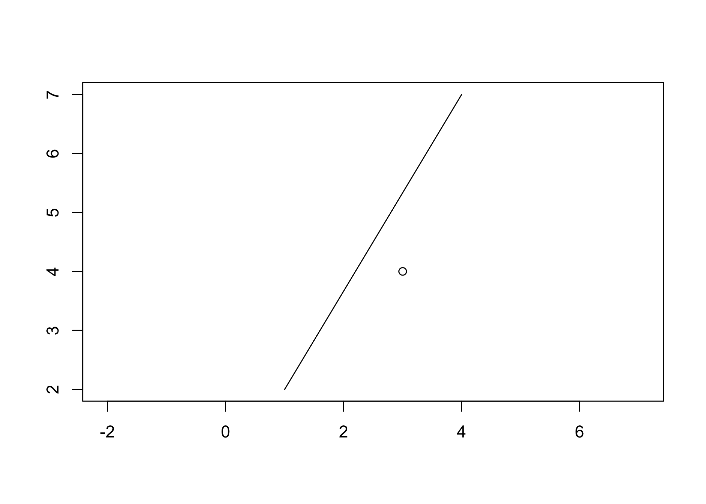
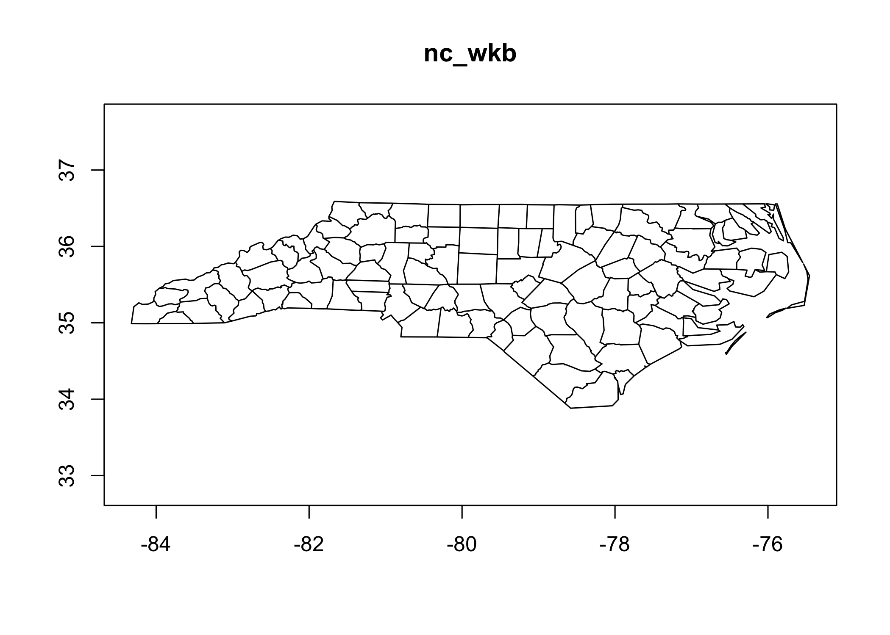

Whereas the wk package provides headers and class definitions for well-known geometry formats, this package uses those headers to interrogate and transform these vectors.
You can install the released version of wkutils from CRAN with:
install.packages("wkutils")
And the development version from GitHub with:
# install.packages("remotes") remotes::install_github("paleolimbot/wkutils")
This is a basic example which shows you how to solve a common problem:
library(wkutils) wkt_coords("POINT (30 10)") #> # A tibble: 1 x 7 #> feature_id part_id ring_id x y z m #> <int> <int> <int> <dbl> <dbl> <dbl> <dbl> #> 1 1 1 0 30 10 NA NA coords_point_translate_wkt(30, 10) #> [1] "POINT (30 10)" wkt_debug("POINT (30 10)") #> nextFeatureStart(0) #> nextGeometryStart(POINT [1], WKReader::PART_ID_NONE) #> nextCoordinate(POINT [1], WKCoord(x = 30, y = 10), 0) #> nextGeometryEnd(POINT [1], WKReader::PART_ID_NONE) #> nextFeatureEnd(0) wkt_set_srid("POINT (30 10)", 1234) #> [1] "SRID=1234;POINT (30 10)" wkt_set_z("POINT (30 10)", 1234) #> [1] "POINT Z (30 10 1234)" wkt_meta("POINT (30 10)") #> # A tibble: 1 x 8 #> feature_id part_id type_id size srid has_z has_m n_coords #> <int> <int> <int> <int> <int> <lgl> <lgl> <int> #> 1 1 1 1 1 NA FALSE FALSE 1 wkt_ranges("POINT (30 10)") #> # A tibble: 1 x 8 #> xmin ymin zmin mmin xmax ymax zmax mmax #> <dbl> <dbl> <dbl> <dbl> <dbl> <dbl> <dbl> <dbl> #> 1 30 10 Inf Inf 30 10 -Inf -Inf
The package also contains plot methods for wk::wkb(), wk::wkt(), and wk::wksxp() vectors. These aren’t intended to be high-performance, but are helpful for debugging geometries.

Finally, the package contains high-performance functions to send points, lines, and polygons to a graphics device:
nc_sf <- sf::read_sf(system.file("shape/nc.shp", package = "sf")) nc_wkb <- wk::as_wkb(sf::st_as_binary(nc_sf$geometry)) wkb_plot_new(nc_wkb) wkb_draw_polypath(nc_wkb)
